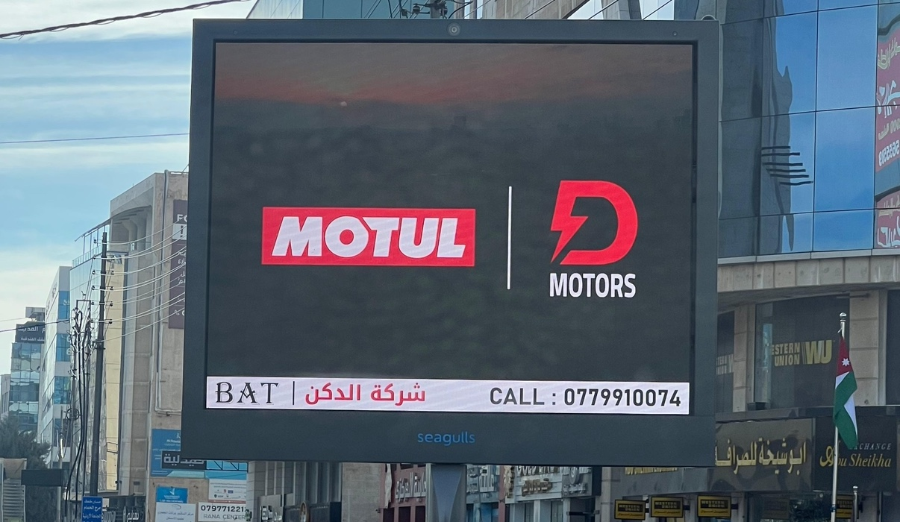

Where Diken began, and still leads.
Diken was founded in 1990 to supply spare parts to multinational companies operating in Jordan. Three decades later it holds three exclusive agency agreements for the country.
Three brands, exclusively Diken in Jordan.


Lubricants
Engine and transmission oils for motorcycles, cars and fleets. Diken is Motul's exclusive agent in Jordan and supplies its own 5,000-captain fleet with it.
Commercial-vehicle braking and control systems
Air-brake, ABS and electronic control components for trucks, buses and trailers, with the parts back-catalogue Jordan's fleets run on.
Trailer axles and running gear
Axles, suspensions and components for trailers and semi-trailers, supplied and supported in Jordan through Diken.
Thirty-five years of parts.
Before the fleet, before the agencies, Diken was the company multinationals in Jordan called when a machine stopped. That habit of finding the part and solving the problem is where the tagline comes from.
Spare-parts supply begins
Distribution for multinational companies in Jordan.
Exclusive agencies
Motul, Wabco and BPW, with the group's own fleet as a reference customer.
Need a part, a price list or a dealer?
Trade and fleet enquiries for Motul, Wabco and BPW in Jordan.